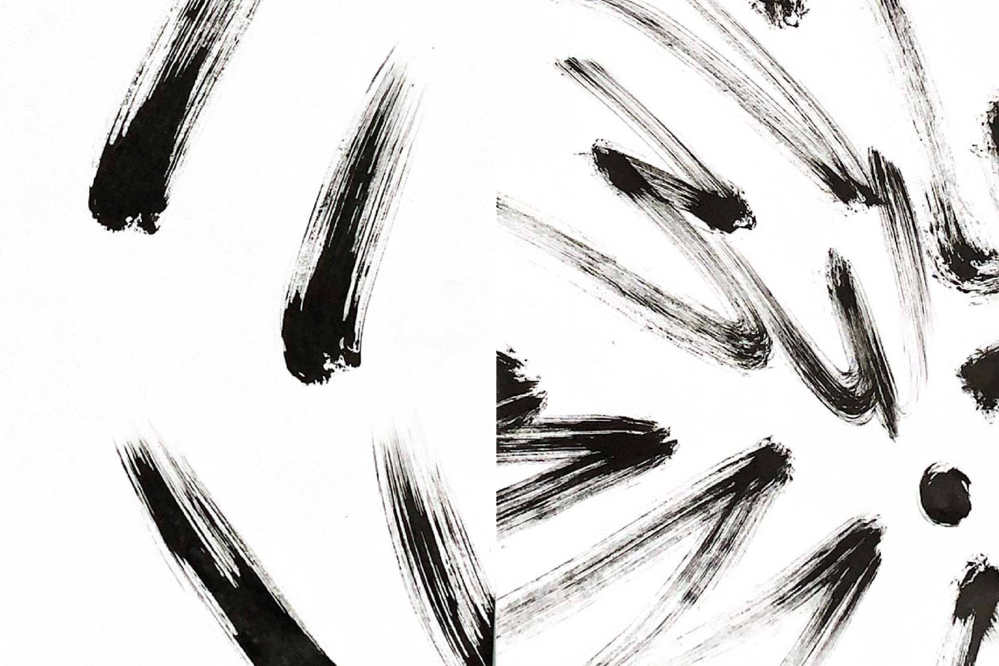
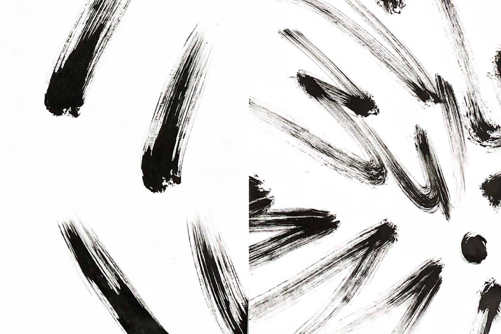
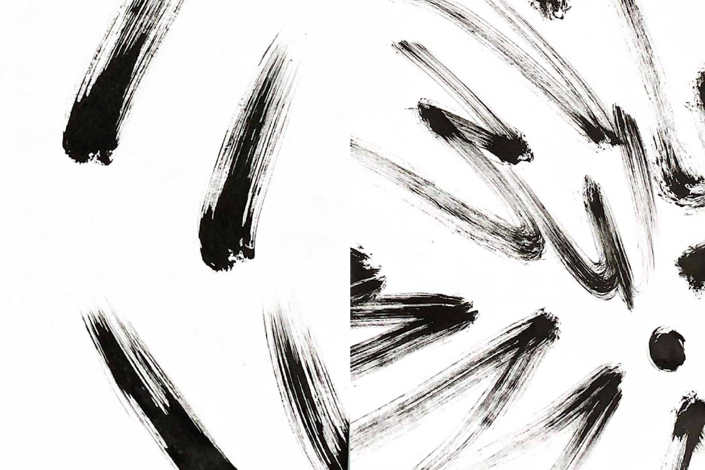
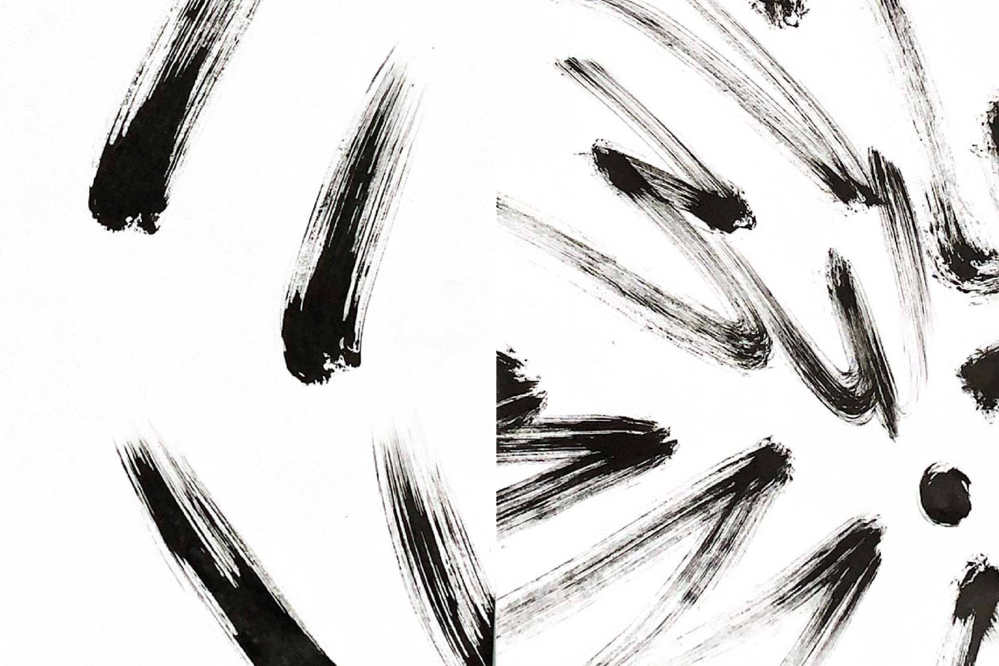
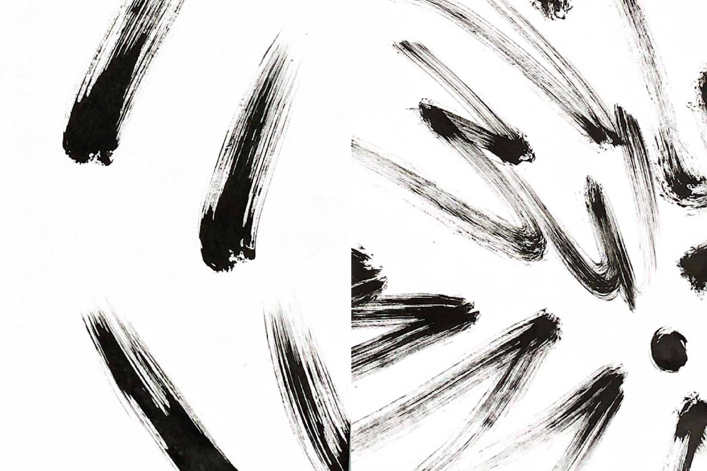

Pour la Journée d’étude au CNAM nous avons dû produire des affiches en lien avec le thème de l'année 2023 qui était “Sauvage”. Suite à une exploration visuelle de la représentation du mot sauvage en utilisant par exemple des outils comme des pinceaux et de l’encre de chine en effectuant des gestes rapides pour évoquer la trace, ainsi que des tests typographiques. Cela a servi de support pour la création d'affiches avec comme contraintes l’utilisation seulement de la photocopieuse et du vert fluo, couleur du Lycée Auguste Renoir Paris. Mes affiches reprennent l’idée de déchirure mais de deux manières, l’un initie à la déchirure par les spectateur reliant l’idée de sauvage à celle de “vandalisme”.
